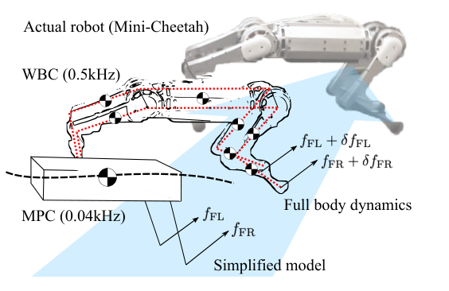
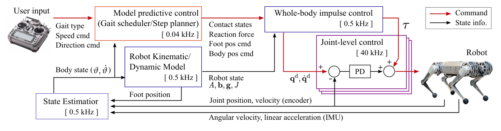
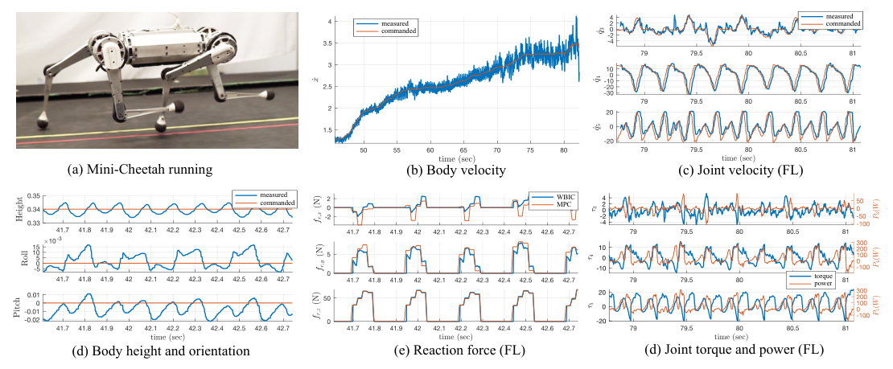
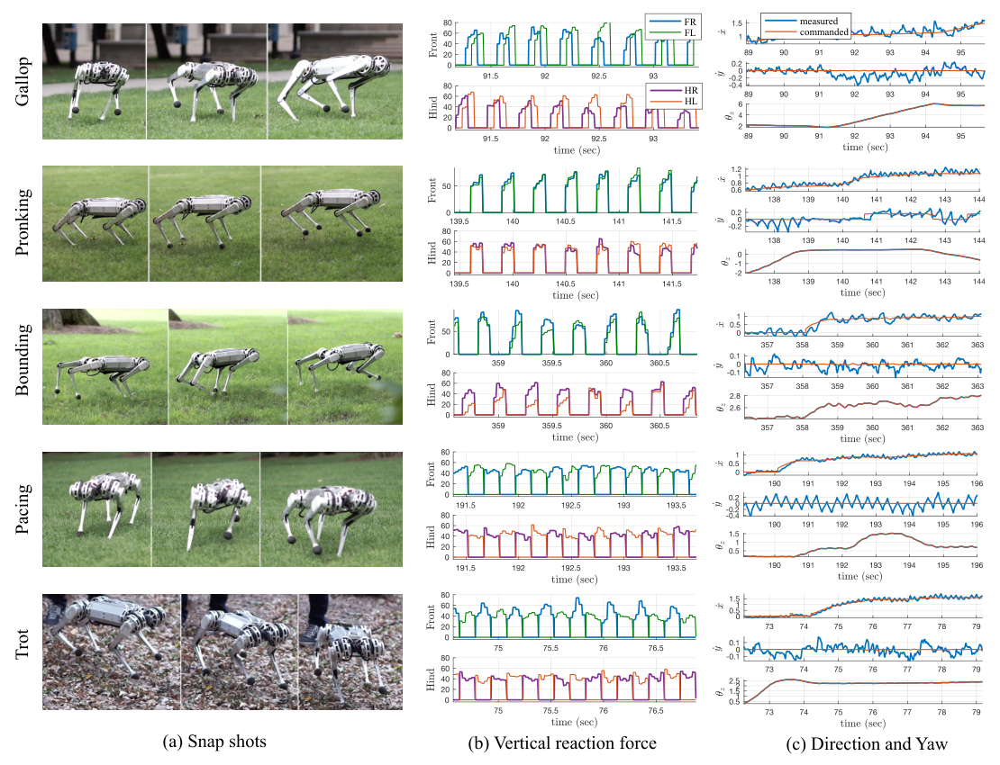

Background & Motivation
這篇 MIT 論文把兩個控制器疊成一個階層:凸 MPC 用集中質量(lumped-mass)簡化模型,以 0.04 kHz 規劃一整個步態週期的最佳地面反作用力剖面;新提出的 Whole-Body Impulse Control(WBIC)則以 0.5 kHz 用全身動力學 + QP 追蹤這些「力命令」而非身體軌跡。結果:Mini-Cheetah 用同一組參數跑出六種步態,最高 3.7 m/s(Froude number 4.65),是當時文獻記錄中最敏捷的四足奔跑之一。
This MIT paper stacks two controllers into one hierarchy: convex MPC plans an optimal ground-reaction-force profile over a full gait cycle on a lumped-mass model at 0.04 kHz, while the new Whole-Body Impulse Control (WBIC) runs at 0.5 kHz with full-body dynamics + QP, tracking those force commands rather than body trajectories. Result: with one fixed parameter set, Mini-Cheetah runs six gaits, topping out at 3.7 m/s (Froude number 4.65)—among the most agile documented quadruped locomotion at the time.

如果只有 30 秒In 30 seconds
- 問題 — 高動態奔跑充滿騰空期、極短觸地、高速擺腿。傳統 WBC 只會「追軌跡」,但在騰空或奔馳(gallop)時 CoM 根本不可控;MPC-only 又因低更新率(40 Hz)+ 過簡模型,姿態控制不穩——前作 Mini-Cheetah 只到 2.45 m/s,且受限於控制器而非硬體。
- Problem — Dynamic running is full of aerial phases, short stance times, high-speed leg swings. Classic WBCs only track trajectories, but during flight or galloping the CoM is simply uncontrollable; MPC-only suffers from a low update rate (40 Hz) + oversimplified model—the previous Mini-Cheetah controller peaked at 2.45 m/s, limited by control, not hardware.
- 方法 — 凸 MPC 在集中質量模型上解出一個步態週期的力剖面;WBIC 把它當 desired reaction force,用 null-space 任務階層算運動學命令、再用一個小 QP 只鬆弛「力偏差 \(\delta_{f_r}\)」與「浮動基座加速度 \(\delta_f\)」,同時輸出關節力矩+位置+速度三種命令給 40 kHz 關節 PD。
- Method — Convex MPC solves a gait-cycle force profile on the lumped-mass model; WBIC treats it as the desired reaction force, computes kinematic commands via a null-space task hierarchy, then runs a small QP that relaxes only the force deviation \(\delta_{f_r}\) and floating-base acceleration \(\delta_f\), outputting joint torque + position + velocity commands to 40 kHz joint PD loops.
- 結果 — 3.7 m/s 穩定奔跑(觀測到 4 m/s 後跌倒)、六種步態、室外草地/礫石皆穩,關節速度/力矩/功率幾乎打滿硬體極限——證明瓶頸真的從硬體移回了控制器。
- Results — Stable running at 3.7 m/s (4 m/s observed, then a fall), six gaits, robust outdoors on wet grass and gravel, with joint velocity/torque/power near hardware limits—showing the bottleneck really had been the controller, not the machine.
領域脈絡Field context
2019 年之前,四足控制有兩條主線。第一條是 whole-body control(WBC) 系譜:operational space control、null-space 任務階層、QP 力分配 [5]–[7]——動力學一致、架構通用,但全都假設「上游給我一條軌跡,我來追」;遇到頻繁離地的運動就失效。第二條是本團隊自己的 convex MPC 系譜:Cheetah 3(IROS 2018)[8] 與 Mini-Cheetah(ICRA 2019)[9] 用簡化模型 + 凸 QP 直接規劃反作用力,換步態只要改接觸序列——但40 Hz 的更新率與模型簡化讓位置控制先天不足。
Before 2019, quadruped control had two main lines. First, the whole-body control (WBC) lineage: operational space control, null-space task hierarchies, QP force distribution [5]–[7]—dynamically consistent and general, but all assume "someone hands me a trajectory to track," which breaks down for motions with frequent non-contact phases. Second, this group's own convex MPC lineage: Cheetah 3 (IROS 2018) [8] and Mini-Cheetah (ICRA 2019) [9] plan reaction forces directly on a simplified model with a convex QP, switching gaits by merely changing the contact sequence—but the 40 Hz update rate and model simplifications cripple position control.
關鍵的思想源頭是 Cheetah 2 的 impulse planning [4]:極端動態、大量欠驅動的運動中,「規劃力(衝量)」比「規劃 CoM 軌跡」實際得多。另一頭,全身非線性 MPC [10][11] 想一步到位,但高度優化的求解器也只擠得進 ~200 Hz,實測動態性反而不如;而同期的 RL 路線(Hwangbo et al., Science Robotics 2019 [16])則是完全不同的另一極。本文站在兩條模型式路線的交會點:把 MPC 的「遠見」與 WBC 的「反應力」,用「力」這個介面縫起來。
The key intellectual ancestor is Cheetah 2's impulse planning [4]: for extremely dynamic, heavily underactuated motion, planning forces (impulses) is far more practical than planning a CoM trajectory. At the other extreme, full-body nonlinear MPC [10][11] tries to do everything at once, but even highly optimized solvers barely reach ~200 Hz, and the demonstrated motions are less dynamic; meanwhile the RL line (Hwangbo et al., Science Robotics 2019 [16]) was emerging as a wholly different pole. This paper sits at the junction of the two model-based lines: stitching the foresight of MPC to the reflexes of WBC through the interface of force.
這是一篇「分工」哲學的論文:慢層用簡單模型看得遠(凸性保證永遠解得出全域最優),快層用完整模型反應快(500 Hz 回授吸收模型誤差)。作者刻意避開「用一個大優化解決一切」的誘惑——這個取捨後來被證明是對的。
This is a paper about division of labor: the slow layer sees far with a simple model (convexity guarantees a global optimum every time), the fast layer reacts quickly with the full model (500 Hz feedback absorbs model error). The authors deliberately resist the temptation of one big optimization that solves everything—a trade-off later vindicated.
核心洞見 · KEY INSIGHTSKEY INSIGHTS
這篇值得帶走的不是「MPC+WBC 拼在一起」,而是底下幾個更深的觀念:
The takeaway is not "MPC glued to WBC" but these deeper ideas:
- 控制的介面從「軌跡」換成「力」。騰空時 CoM 不可控、galloping 時 CoM 永遠不可控——追一條追不到的軌跡沒有意義;接觸力是物理上永遠可以執行的量,所以拿它當兩層之間的契約。
- Swap the control interface from trajectory to force. The CoM is uncontrollable during flight and never controllable in galloping—tracking an untrackable trajectory is meaningless; contact force is the one quantity physics always lets you execute, so make it the contract between layers.
- 兩層互補,各治對方的病。MPC 治 WBC 的「只看一步」(單時步視野);WBC 治 MPC 的「低頻+粗模型」(500 Hz 全身動力學回授)。
- Two layers, each curing the other's disease. MPC cures WBC's single-timestep myopia; WBC cures MPC's low rate + coarse model with 500 Hz full-body feedback.
- 凸性 = 實機可靠性。預先固定接觸序列讓 MPC 保持凸,永遠可解到唯一全域最優、不會卡在怪異局部解——對真實硬體,「每次都解得出」比「解得更精」重要。
- Convexity = hardware reliability. Fixing the contact sequence keeps MPC convex, always solvable to a unique global optimum with no weird local minima—on real hardware, "solves every time" beats "solves slightly better."
- 鬆弛對的變數,而不是上重型武器。只鬆弛 6 維浮動基座加速度 \(\delta_f\) 與力偏差 \(\delta_{f_r}\),QP 小到 500 Hz 可解;刻意不用 hierarchical QP 那類複雜機制。
- Relax the right variables instead of deploying heavy machinery. Relaxing only the 6-D floating-base acceleration \(\delta_f\) and the force deviation \(\delta_{f_r}\) keeps the QP small enough for 500 Hz; hierarchical QP is deliberately avoided.
- 力矩之外,還回傳位置/速度。WBIC 額外輸出關節位置與速度給 40 kHz 關節 PD(比 WBC 快 80 倍)——collocated 高頻回授是實機動態運動穩定的無名英雄。
- Return position/velocity, not just torque. WBIC also outputs joint positions and velocities to 40 kHz joint PD loops (80× faster than the WBC)—collocated high-rate feedback is the unsung hero of real-hardware dynamic motion.
- 工程效率是成果的一半。含轉子動力學的自製動力學引擎 + 模板化線性代數,讓 MPC 30 Hz、WBIC 500 Hz 跑在 Mini-Cheetah 機上的低功耗電腦上。
- Engineering efficiency is half the result. A custom dynamics engine with rotor dynamics + template-based linear algebra runs MPC at 30 Hz and WBIC at 500 Hz on the low-power onboard computer of Mini-Cheetah.
Problem Diagnosis
現況 vs 痛點Status quo vs pain points
| 現有做法Existing approach | 它的痛點Its pain point |
|---|---|
| 傳統 WBCClassic WBC [5]–[7] | 預設「追蹤給定的身體軌跡、由接觸力來實現」;騰空期 CoM 不可控、gallop 時 CoM 永不可控,追軌跡本身就是病。且只看一個時步,毫無視野。Built to track a given body trajectory by manipulating contact forces; the CoM is uncontrollable in flight and never controllable in gallop—trajectory tracking is itself the disease. Also sees one timestep, no horizon. |
| MPC-only 凸 MPC + 簡化模型 [8][9]convex MPC + simple model [8][9] | 40 Hz 更新率 + 集中質量簡化 → 位置/姿態控制先天不足;Mini-Cheetah 上限 2.45 m/s,受限於控制器穩定度而非硬體。40 Hz update + lumped-mass simplification → inherently weak position/posture control; Mini-Cheetah capped at 2.45 m/s, limited by controller stability, not hardware. |
| 全身非線性 MPCFull-body nonlinear MPC [10][11] | 高度優化的求解器也只擠得進 ~200 Hz,同平台展示的動態性反而較弱;非線性優化可能卡在怪異局部解。Even highly optimized solvers barely fit 200 Hz, with less dynamic demos on the same robots; nonlinear optimization can stall in strange local minima. |
| Cheetah 2 impulse planning [4] | 「規劃力而非軌跡」思想的來源,成功 bounding/jumping,但規劃器與特定步態綁定,不通用。The origin of "plan forces, not trajectories," with successful bounding/jumping—but the planner is gait-specific, not general. |
| MPC + WBC Grandia et al. [15] | 整合已存在,但 WBC 拿 MPC 的 CoM 軌跡來追,力只用來調內力——CoM 永不可控的 gallop 依然行不通。Integration exists, but its WBC tracks the CoM trajectory from MPC, using forces only to regulate internal forces—still hopeless for gallop, where the CoM is never controllable. |
核心問題:MPC 的遠見與 WBC 的反應力如何接起來,而且介面必須容忍騰空與欠驅動?本文的答案:介面 = 反作用力剖面。
The core question: how do you connect the foresight of MPC to the reflexes of WBC through an interface that tolerates flight and underactuation? The answer here: the interface = the reaction-force profile.
Gap 表 — 誰缺什麼,本文怎麼補Gap table — who lacks what, and how this paper fills it
| 方法Method | 限制Limitation | 本文如何補上How this paper fills it |
|---|---|---|
| 傳統 WBCClassic WBC | 追軌跡 + 單步視野Trajectory tracking + one-step horizon | 改追 MPC 的力命令;浮動基座加速度以 \(\delta_f\) 鬆弛,允許機身在騰空時「不受控」;視野交給 MPC。Track MPC force commands instead; relax floating-base acceleration via \(\delta_f\) so the trunk may go uncontrolled in flight; delegate the horizon to MPC. |
| MPC-only [8][9] | 40 Hz、粗模型,姿態控制弱40 Hz, coarse model, weak posture control | WBIC 以 500 Hz 全身動力學把力命令翻成準確力矩,並補上擺腿與姿態的高頻回授 → 2.45 → 3.7 m/s。WBIC translates force commands into accurate torques with 500 Hz full-body dynamics, adding high-rate swing/posture feedback → 2.45 → 3.7 m/s. |
| 全身 MPCFull-body MPC [10][11] | 算力天花板,實測不夠動態Compute ceiling, less dynamic in practice | 把「看遠」與「看細」拆開:凸 MPC(簡模型)+ WBIC(全模型)各跑各的頻率,兩個小問題取代一個大問題。Split "seeing far" from "seeing fine": convex MPC (simple model) + WBIC (full model) at their own rates—two small problems instead of one big one. |
| [15] MPC+WBC | WBC 追 CoM 軌跡,force 只調內力WBC tracks CoM trajectory; forces only regulate internal forces | 顛倒主從:力命令是主角(QP 權重 \(Q_1{=}1\) vs \(Q_2{=}0.1\)),軌跡只是參考 → jump/bound/gallop 這類 CoM 不可控步態變可行。Invert the hierarchy: force commands are primary (QP weights \(Q_1{=}1\) vs \(Q_2{=}0.1\)), the trajectory is only a reference → gaits with uncontrollable CoM (jump/bound/gallop) become feasible. |
注意作者的誠實定位:「新穎之處不在整合 MPC 與 WBC」(那已是 established framework [12]–[15]),而在「MPC 的結果如何被 WBC 使用」。看似只是介面選擇的小差異,卻決定了整個系統能不能處理 CoM 不可控的步態——這是讀這篇論文時最該盯住的一句話。
Note the authors' honest framing: the novelty is NOT integrating MPC with WBC (already an established framework [12]–[15]) but HOW the MPC result is consumed by the WBC. A seemingly small interface choice—yet it decides whether the system can handle gaits with an uncontrollable CoM. This is the sentence to watch in the whole paper.
Core Method
雙層架構:兩個模型、三種頻率The two-layer architecture: two models, three rates

MPC 看到的世界(式 1–2)只有一個會飛的箱子:
The world MPC sees (Eqs. 1–2) is just a flying box:
WBIC 看到的世界(式 3)則是帶接觸的完整多體動力學:
The world WBIC sees (Eq. 3) is full multi-body dynamics with contact:
上式左邊前 6 列(浮動基座)沒有任何 \(\boldsymbol{\tau}\)——機身只能靠 \(\mathbf{J}_c^{\top}\mathbf{f}_r\) 間接推動,這正是「力才是根本介面」的數學根源。
The first 6 rows (floating base) contain no \(\boldsymbol{\tau}\) on the right—the trunk can only be moved indirectly through \(\mathbf{J}_c^{\top}\mathbf{f}_r\). This is the mathematical root of "force is the fundamental interface."
MPC 層:三個假設換一個凸 QPThe MPC layer: three assumptions buy one convex QP
集中質量模型仍非線性(力臂外積、姿態動力學)。沿用 [8],以三個假設凸化:(i) roll/pitch 角小 → \(\dot{\Theta}\approx R_z(\psi)\,\boldsymbol{\omega}\)、\(^G\mathbf{I}\approx R_z(\psi)\,^B\mathbf{I}\,R_z(\psi)^{\top}\);(ii) 狀態貼近命令軌跡 → 用命令的 \(\psi\) 與預定步點的力臂 \(\mathbf{r}_i\) 做時變線性化;(iii) 角速度小、慣量非對角項小 → \(\frac{d}{dt}(\mathbf{I}\boldsymbol{\omega})\approx \mathbf{I}\dot{\boldsymbol{\omega}}\)。得到線性離散動態:
The lumped-mass model is still nonlinear (moment-arm cross product, orientation dynamics). Following [8], three assumptions convexify it: (i) small roll/pitch → \(\dot{\Theta}\approx R_z(\psi)\,\boldsymbol{\omega}\), \(^G\mathbf{I}\approx R_z(\psi)\,^B\mathbf{I}\,R_z(\psi)^{\top}\); (ii) states stay near the commanded trajectory → time-varying linearization with commanded \(\psi\) and moment arms \(\mathbf{r}_i\) from planned footholds; (iii) small angular rates and off-diagonal inertia → \(\frac{d}{dt}(\mathbf{I}\boldsymbol{\omega})\approx \mathbf{I}\dot{\boldsymbol{\omega}}\). This yields linear discrete dynamics:
在此之上解 QP(式 10),並以摩擦金字塔約束力(式 11):
On top of this, a QP (Eq. 10) with friction-pyramid force constraints (Eq. 11):
- 變數消去:不在地上的腳,其力變數直接刪除 → cost/constraint 矩陣同時縮小,實務提速 10 倍以上;點接觸故不需 [18] 的 non-flip 條件。
- Variable elimination: force variables of feet not on the ground are deleted → both cost and constraint matrices shrink, a >10× practical speedup; point contacts need no non-flip condition from [18].
- Gait scheduler [19]:每腳只需 2 個參數(phase offset、stance 比例)即可定義步態;改週期長度就能變頻,步態型態不隨頻率改變。
- Gait scheduler [19]: two parameters per foot (phase offset, stance portion) define a gait; changing the cycle duration changes frequency while preserving the gait type.
落腳點規劃(式 12–15)= 肩位置 + Raibert 對稱項 + 離心補償:
Foothold planning (Eqs. 12–15) = shoulder position + Raibert symmetry + centrifugal compensation:
Raibert heuristic [20] 讓落地角=離地角(對稱步),回授增益 \(k=0.03\)。高速時另加一招:前腳收窄、後腳放寬,避免前後腿高速交錯時互撞(Fig.4a 可見腿交叉而不碰)。
The Raibert heuristic [20] equalizes touchdown and liftoff angles (symmetric step), feedback gain \(k=0.03\). At high speed one more trick: narrow the front step width, widen the hind, so fast-crossing legs never collide (visible in Fig.4a).
WBIC 層 · 第一步:嚴格階層的運動學命令The WBIC layer, step 1: strictly prioritized kinematic commands
先用 null-space 投影逐一執行任務(優先序:身體姿態 ≻ 身體位置 ≻ 擺腿足端,Table I;所有任務 \(K_p=100\,\mathrm{s}^{-2}\)、\(K_d=10\,\mathrm{s}^{-1}\)),疊代出位置、速度、加速度命令:
First, tasks are executed one by one via null-space projection (priority: body orientation ≻ body position ≻ swing-foot position, Table I; all tasks \(K_p=100\,\mathrm{s}^{-2}\), \(K_d=10\,\mathrm{s}^{-1}\)), iterating out position, velocity, and acceleration commands:
- 接觸腳排第 0 位:\(\mathbf{N}_0=\mathbf{I}-\mathbf{J}_c^{\dagger}\mathbf{J}_c\) 先把所有任務投影進「接觸腳不動」的零空間——支撐腳打滑之前,任何任務都不許動它。
- Contact comes zeroth: \(\mathbf{N}_0=\mathbf{I}-\mathbf{J}_c^{\dagger}\mathbf{J}_c\) projects every task into the null space of "stance feet do not move"—no task may perturb a support foot.
- 兩種 pseudo-inverse:運動學(位置/速度)用 SVD 型 \(\{\cdot\}^{\dagger}\);加速度用動力學一致的 \(\overline{\mathbf{J}}=\mathbf{A}^{-1}\mathbf{J}^{\top}\big(\mathbf{J}\mathbf{A}^{-1}\mathbf{J}^{\top}\big)^{-1}\)(式 23),把慣量納入投影。
- Two pseudo-inverses: kinematics (position/velocity) uses the SVD-based \(\{\cdot\}^{\dagger}\); acceleration uses the dynamically consistent \(\overline{\mathbf{J}}=\mathbf{A}^{-1}\mathbf{J}^{\top}\big(\mathbf{J}\mathbf{A}^{-1}\mathbf{J}^{\top}\big)^{-1}\) (Eq. 23), folding inertia into the projection.
- 三種輸出、兩條去路:\(\mathbf{q}^{\mathrm{cmd}}_j=\mathbf{q}_j+\Delta\mathbf{q}_j\) 與 \(\dot{\mathbf{q}}^{\mathrm{cmd}}_j\) 直接餵 40 kHz 關節 PD(\(k_p=3\,\mathrm{Nm/rad}\)、\(k_d=0.3\);abduction \(k_d=1\));\(\ddot{\mathbf{q}}^{\mathrm{cmd}}\) 進下一步的 QP。用位置回授是刻意的:collocated、超高頻,是動態動作在實機上站得住的關鍵(承襲作者的 passive-ankle biped 經驗 [14],但因 Mini-Cheetah 用 proprioceptive actuator,改用 operational space control 而非組態阻抗)。
- Three outputs, two destinations: \(\mathbf{q}^{\mathrm{cmd}}_j=\mathbf{q}_j+\Delta\mathbf{q}_j\) and \(\dot{\mathbf{q}}^{\mathrm{cmd}}_j\) feed the 40 kHz joint PD (\(k_p=3\,\mathrm{Nm/rad}\), \(k_d=0.3\); abduction \(k_d=1\)); \(\ddot{\mathbf{q}}^{\mathrm{cmd}}\) goes to the QP below. Position feedback is deliberate: collocated and ultra-fast, it is what keeps dynamic motion stable on hardware (inherited from the passive-ankle biped work [14], but switched to operational space control since Mini-Cheetah uses proprioceptive actuators, not SEAs).
WBIC 層 · 第二步:一個小 QP 決定最終的力The WBIC layer, step 2: one small QP settles the final forces
讀法:最終反作用力 = MPC 的力 + 小偏差 \(\boldsymbol{\delta}_{f_r}\);最終加速度 = WBIC 的加速度命令 + 僅浮動基座的鬆弛 \(\boldsymbol{\delta}_f\)(6 維)。等式約束只留浮動基座那 6 條無驅動的動力學(\(\mathbf{S}_f\) 挑出它們),不等式 \(\mathbf{W}\mathbf{f}_r\ge\mathbf{0}\) 是摩擦錐。權重 \(Q_1=1 \gg Q_2=0.1\):偏離 MPC 力的懲罰是偏離基座加速度命令的 10 倍——力命令才是主角,身體軌跡只是參考。最後把解出的 \(\ddot{\mathbf{q}},\mathbf{f}_r\) 代回全身動力學取關節力矩:
How to read it: final reaction force = MPC force + a small deviation \(\boldsymbol{\delta}_{f_r}\); final acceleration = WBIC acceleration command + a floating-base-only relaxation \(\boldsymbol{\delta}_f\) (6-D). The only equality kept is the 6 unactuated floating-base rows (selected by \(\mathbf{S}_f\)); the inequality \(\mathbf{W}\mathbf{f}_r\ge\mathbf{0}\) is the friction cone. Weights \(Q_1=1 \gg Q_2=0.1\): deviating from MPC forces costs 10× more than deviating from the commanded base acceleration—force commands are primary; the body trajectory is only a reference. Finally, plug the solved \(\ddot{\mathbf{q}},\mathbf{f}_r\) back into the full dynamics for joint torques:
鬆弛 \(\boldsymbol{\delta}_f\) 的本意是允許機身在騰空期「不受控」。代價:其他任務的加速度會出現追蹤誤差。作者明言選擇忽略這個影響——在實機上,讓任務命令隨不可預測的基座運動起舞並無好處;與其上 hierarchical QP [22] 這類重型機制,不如簡單鬆弛。這是全文最「工程哲學」的一段。
The intent of \(\boldsymbol{\delta}_f\) is to let the base go uncontrolled during flight. The cost: tracking error leaks into other task accelerations. The authors explicitly choose to ignore this effect—on real hardware, letting task commands dance to unpredictable base motion helps nothing; better a simple relaxation than heavy machinery like hierarchical QP [22]. The most engineering-philosophy passage of the paper.
符號白話對照Symbols in plain words
| \(\mathbf{p},\ \boldsymbol{\omega}\) | 機身位置與角速度(全域座標);\(\Theta=[\phi\;\theta\;\psi]\) 為 roll/pitch/yaw。Body position and angular velocity (global frame); \(\Theta=[\phi\;\theta\;\psi]\) is roll/pitch/yaw. |
| \(\mathbf{f}_i,\ \mathbf{r}_i\) | 第 \(i\) 個接觸點的反作用力,與其相對 CoM 的力臂。Reaction force at contact \(i\), and its moment arm relative to the CoM. |
| \(\mathbf{A},\mathbf{b},\mathbf{g}\) | 廣義質量矩陣、Coriolis 力、重力(全身模型;含轉子慣量)。Generalized mass matrix, Coriolis, gravity (full-body model; rotor inertia included). |
| \(\ddot{\mathbf{q}}_f,\ \ddot{\mathbf{q}}_j\) | 浮動基座加速度(\(\mathbb{R}^6\),無驅動)與關節加速度(\(\mathbb{R}^{n_j}\))。Floating-base acceleration (\(\mathbb{R}^6\), unactuated) and joint accelerations (\(\mathbb{R}^{n_j}\)). |
| \(\mathbf{J}_c,\ \mathbf{f}_r\) | 接觸 Jacobian 與堆疊的接觸反作用力向量。Contact Jacobian and the stacked contact reaction-force vector. |
| \(\mathbf{J}_{i|\mathrm{pre}}\) | 第 \(i\) 個任務的 Jacobian 投影到「所有更高優先任務的零空間」後的版本。Task-\(i\) Jacobian projected into the null space of all higher-priority tasks. |
| \(\overline{\mathbf{J}}\) | 動力學一致 pseudo-inverse(式 23):以 \(\mathbf{A}^{-1}\) 加權,最小化加速度能量。Dynamically consistent pseudo-inverse (Eq. 23): weighted by \(\mathbf{A}^{-1}\), minimizing acceleration energy. |
| \(\boldsymbol{\delta}_{f_r},\ \boldsymbol{\delta}_f\) | 兩個鬆弛變數:對 MPC 力命令的偏差、浮動基座加速度的偏差(QP 的唯二決策變數)。The two relaxations: deviation from MPC forces, and floating-base acceleration deviation (the only QP decision variables). |
| \(\mathbf{S}_f,\ \mathbf{W}\) | 浮動基座選擇矩陣(挑出無驅動的 6 列)、接觸力約束(摩擦錐)矩陣。Floating-base selection matrix (picks the 6 unactuated rows) and contact-force constraint (friction cone) matrix. |
Experimental Evidence
主結果:高速奔跑(跑步機,trot)Main result: high-speed running (treadmill, trot)
| 指標Metric | 本文(MPC+WBIC)This work (MPC+WBIC) | 對照Reference points |
|---|---|---|
| 最高穩定速度Top stable speed | 3.7 m/s | 前作 MPC-only(同一台 Mini-Cheetah):2.45 m/s → +51%,且瓶頸是控制器而非硬體Prior MPC-only (same Mini-Cheetah): 2.45 m/s → +51%, bottleneck was control, not hardware |
| 瞬間觀測速度Peak observed speed | 4.0 m/s | 達到後隨即跌倒,故正式記錄取 3.7Fell immediately after, so 3.7 is the official record |
| Froude number | 4.65 | 多數文獻四足 < 2 [2][16];Cheetah 2 bounding 6.4 m/s(Fr 7.1)[4];WildCat 8 m/s(未文檔化)Most documented robots < 2 [2][16]; Cheetah 2 bounding 6.4 m/s (Fr 7.1) [4]; WildCat 8 m/s (undocumented) |
| 髖關節速度 / 力矩Hip joint velocity / torque | 34 rad/s · 25.5 N·m命令值commanded | 硬體上限 40 rad/s / 17 N·m(命令超過即截斷)→ 硬體能力被打滿Hardware limits 40 rad/s / 17 N·m (over-limit commands truncated) → hardware capacity saturated |
| 關節功率峰值Peak joint power | 280 W命令值commanded | 致動器規格 250 WActuator spec 250 W |

多步態與戶外 robust 測試Multi-gait and outdoor robustness tests
- 同一組參數跑遍全部實驗:所有任務增益、QP 權重、關節 PD 增益在六種步態與所有地形上完全不變;操作者只透過遙控器給三個輸入——步態、速度、方向。
- One parameter set for every experiment: all task gains, QP weights, and joint PD gains stay identical across six gaits and all terrains; the operator sends only three RC inputs—gait type, speed, direction.
- 每種步態皆可 >1 m/s(戶外);Fig.5(b) 顯示換步態時控制器自動產生正確的力剖面型態(gallop 四腳錯開、pronk 四腳齊推、pace 同側成對…)。
- Every gait runs >1 m/s outdoors; Fig.5(b) shows the controller automatically produces the right force-profile pattern per gait (staggered feet in gallop, all-four push in pronk, lateral pairs in pace…).
- 地形魯棒:雨後濕滑草地上姿態穩定、擺腿精準;礫石地(高粗糙度+滾動元素)也能跑。結論並提及崎嶇地形上的 push-recovery(見影片)。
- Terrain robustness: stable posture and accurate swing control on rain-slicked grass; runs over gravel (high roughness + rolling elements). The conclusion also mentions push-recovery on rough terrain (see video).

消融怎麼讀(這篇沒有正式 ablation)Reading the ablation (there is no formal one)
| 拿掉什麼What is removed | 代價Cost | 證明什麼What it proves |
|---|---|---|
| 拿掉 WBIC(= 前作 MPC-only [9])Remove WBIC (= prior MPC-only [9]) | 3.7 → 2.45 m/s3.7 → 2.45 m/s | 高頻全身層價值 +51% 速度;但這是跨論文比較,非同日同設定 A/BThe high-rate whole-body layer is worth +51% speed; but this is a cross-paper comparison, not a same-day A/B |
| 拿掉 MPC 視野(= 純 WBC)Remove the MPC horizon (= pure WBC) | 無法規劃騰空期Cannot plan through flight | 論文以論證(單步視野)而非實驗支持Argued (one-step myopia), not shown experimentally |
| 拿掉變數消去Remove variable elimination | MPC 慢 >10×MPC >10× slower | 實時性依賴這項工程優化Real-time feasibility hinges on this engineering optimization |
實驗證明了什麼/沒證明什麼:證明——單一參數組的分層控制器能在真實硬體上覆蓋六種步態、打滿硬體極限、在濕滑與礫石地穩定。沒證明——與其他控制器在同硬體上的量化對比、統計穩健性(試驗次數/成功率未報)、以及「追力 vs 追軌跡」的獨立貢獻。
What the experiments do and do not prove: They do—one fixed-parameter layered controller covers six gaits on real hardware, saturates hardware limits, stays stable on slippery grass and gravel. They do not—quantified same-hardware comparison against other controllers, statistical robustness (trial counts/success rates unreported), or the isolated contribution of force- vs trajectory-tracking.
Critical Reading
可被質疑的點Contestable points
- 展示型評估,無同場對照:全文沒有任何控制器 A/B 對比表。唯一的「baseline」是引用前作的 2.45 m/s(不同論文、不同時間)。robotics 慣例如此,但「versatile & robust」的宣稱主要靠質性展示支撐。
- Demonstration-style evaluation, no in-situ baseline: no controller A/B table anywhere. The only baseline is the 2.45 m/s cited from prior work (different paper, different time). Standard practice in robotics, but the versatile-and-robust claim rests mostly on qualitative demos.
- 核心主張缺 ablation:2.45→3.7 的進步同時混入「多了一整層 WBC」與「WBC 用力介面」兩件事。沒有「同一 MPC + 追軌跡式 WBC」的對照,故「追力優於追軌跡」在本文中是論證而非實測。
- The central claim lacks an ablation: the 2.45→3.7 gain conflates adding a whole WBC layer with choosing the force interface. No control condition of same MPC + trajectory-tracking WBC—so force-beats-trajectory is argued, not measured, here.
- 凸化假設 vs 高動態的內在張力:MPC 假設 roll/pitch 小、\(\boldsymbol{\omega}\times(\mathbf{I}\boldsymbol{\omega})\approx 0\)、狀態貼近命令——但 bounding/galloping 恰恰有大幅 pitch 振盪。線性化誤差未量化;實際上是 WBIC 的 500 Hz 回授在暗中吸收這些誤差,分工的邊界(MPC 錯多少、WBIC 救多少)沒被分析。
- Inherent tension between convexifying assumptions and high dynamics: MPC assumes small roll/pitch, \(\boldsymbol{\omega}\times(\mathbf{I}\boldsymbol{\omega})\approx 0\), states near command—yet bounding/galloping feature large pitch oscillations. Linearization error is never quantified; in practice WBIC's 500 Hz feedback silently absorbs it, and the division of labor (how wrong MPC is, how much WBIC rescues) goes unanalyzed.
- 接觸時序是預定的:gait scheduler 是開迴路相位表;礫石地上腳必然提早/延後觸地,contact-state 不匹配如何處理,文中僅引 [19] 帶過。地形魯棒性有多少來自控制器、多少來自硬體的機械柔順,無從分辨。
- Contact timing is predefined: the gait scheduler is an open-loop phase table; on gravel, feet inevitably touch down early/late, and contact-state mismatch handling is waved at via [19]. How much terrain robustness comes from control vs the mechanical compliance of the hardware is indistinguishable.
- 兩個被承認重要卻不解釋的元件:Kalman 狀態估計器與含轉子動力學的自製動力學引擎,作者說「對性能貢獻顯著」但 out of scope——復現門檻被低估。[導讀補充] 後來 MIT 開源 Cheetah Software,此問題大幅緩解。
- Two components admitted crucial yet unexplained: the Kalman state estimator and the custom rotor-dynamics engine—"contributed significantly" but out of scope—understating the reproduction barrier. [guide note] Largely mitigated later by the open-sourced MIT Cheetah Software.
- 未驗證的外推主張:「移植到 Cheetah 3 不需要額外工作」「可自然延伸到雙足與 loco-manipulation」皆為展望而非結果。另有小瑕疵:MPC 頻率一處寫 40 Hz、一處寫 30 Hz;Fig.4 有兩個子圖都標 (d)——preprint 品質的痕跡。
- Unverified extrapolations: "porting to Cheetah 3 requires no additional work" and "naturally extends to bipeds and loco-manipulation" are outlook, not results. Minor blemishes too: MPC rate stated as 40 Hz in one place and 30 Hz in another; Fig.4 labels two panels (d)—preprint fingerprints.
給讀書會 / 審稿的犀利問題Sharp questions for a reading group / review
- 介面 ablation:同一 MPC、同一硬體,把 WBIC 換成 CoM-trajectory-tracking WBC([15] 式),3.7 m/s 還能到嗎?trot(CoM 尚可控)與 bound(不可控)的差距會不會不同?
- Interface ablation: same MPC, same hardware, swap WBIC for a CoM-trajectory-tracking WBC (à la [15])—does 3.7 m/s survive? Would the gap differ between trot (CoM controllable) and bound (not)?
- 量測 vs 命令:有無電流量測可以回推實際輸出力矩/功率?截斷發生的時間占比多少?「打滿硬體」能否用量測數據坐實?
- Measured vs commanded: is there current sensing to back out actual torque/power? What fraction of time is the command truncated? Can "hardware fully utilized" be grounded in measurements?
- 統計:3.7 m/s 成功了幾次、跑了多久?六種步態各自的速度上限與典型跌倒模式?沒有這些,「robust」只能當形容詞讀。
- Statistics: how many runs at 3.7 m/s, and for how long? Per-gait speed ceilings and typical failure modes? Without these, robust reads as an adjective, not a result.
- 線性化誤差:bounding 的大 pitch 下,凸 MPC 的預測軌跡與全模型 rollout 差多遠?誤差是否幾乎全靠 WBIC 高頻回授吸收?若是,MPC 的「最優性」還剩多少意義?
- Linearization error: under the large pitch of bounding, how far does the convex-MPC prediction drift from a full-model rollout? Is the error absorbed almost entirely by WBIC feedback—and if so, how much does MPC optimality still mean?
- 接觸時序錯位:礫石上實際觸地時刻與相位表差多少?MPC(假設的接觸狀態)與 WBIC(實際接觸 Jacobian)不一致時,誰說了算?
- Contact-timing mismatch: on gravel, how far do real touchdowns deviate from the phase table? When MPC (assumed contact states) and WBIC (actual contact Jacobian) disagree, who wins?
- Froude 比較的公平性:用 Froude number 跨體型比敏捷度,對 9 kg 的 Mini-Cheetah 是否天然有利(小型機器人相對力矩餘裕大)?與 Cheetah 2 的 bounding(不同步態)直接比 Fr 合理嗎?
- Fairness of Froude comparisons: does Froude-normalized agility naturally favor the 9 kg Mini-Cheetah (small robots enjoy relative torque headroom)? Is comparing Fr against Cheetah 2 bounding—a different gait—apples to apples?
Takeaways
對你研究的啟發Implications for your research
- 分層食譜可直接遷移:慢層 = 簡單模型 + 凸優化 + 長視野,輸出一個「物理上永遠可執行」的介面量(力/衝量);快層 = 全模型 + 高頻回授負責執行與穩定。凡是欠驅動、有 flight phase 的系統(雙足、跳躍機器人、腿臂混合)都適用——作者自己也把雙足與 loco-manipulation 列為下一步。
- The layering recipe transfers directly: slow layer = simple model + convex optimization + long horizon, outputting an interface quantity physics can always execute (force/impulse); fast layer = full model + high-rate feedback for execution and stabilization. Applies to any underactuated system with flight phases (bipeds, jumpers, legged manipulators)—the authors themselves list bipeds and loco-manipulation as next steps.
- 介面設計是被低估的自由度:同樣兩個模組,傳「軌跡」會失敗、傳「力」就成功。設計層間契約時,先問「哪個量在最壞情況下仍然可控/可行?」
- Interface design is an underrated degree of freedom: the same two modules fail when passing trajectories and succeed when passing forces. When designing inter-layer contracts, first ask: which quantity remains controllable/feasible in the worst case?
- 鬆弛變數 > 重型階層機制:挑對 6+12 維變數鬆弛(基座加速度+力偏差),QP 小到 500 Hz;不必動用 hierarchical QP。工程上「夠簡單才跑得快、跑得快才穩」。
- Relaxation variables > heavy hierarchy machinery: relax the right 6+12 dimensions (base acceleration + force deviation) and the QP fits in 500 Hz; no hierarchical QP needed. Engineering truth: simple enough to run fast, fast enough to be stable.
- 讀 RL locomotion 論文前的必修課:[導讀補充] 這篇是 RL 方法(Hwangbo 2019 [16] 及其後的 sim-to-real 系列)最常見的 model-based 對照組原型。理解它,才能判斷 RL 論文宣稱的「超越 MPC baseline」到底超越了什麼、在哪些條件下成立。
- Prerequisite for reading RL locomotion papers: [guide note] this is the prototype of the model-based baseline that RL work (Hwangbo 2019 [16] and the sim-to-real line after it) most often compares against. Understanding it lets you judge what "beats the MPC baseline" actually beats, and under which conditions.
值得引用的點What's worth citing
| 當你要主張…When you claim… | 就引這篇Cite this for |
|---|---|
| 「凸 MPC + WBC 分層是模型式四足的標準架構」"Convex MPC + WBC layering is the standard model-based quadruped stack" | 引本文(架構定型之作)+ [8](凸 MPC 前身)。Cite this paper (the stack-defining work) + [8] (the convex-MPC ancestor). |
| 「高動態/欠驅動運動應追蹤力而非 CoM 軌跡」"Highly dynamic / underactuated motion should track forces, not CoM trajectories" | 引本文 WBIC + Cheetah 2 impulse planning [4]。Cite the WBIC here + Cheetah 2 impulse planning [4]. |
| 「null-space 任務階層 + 小 QP 可在實機 500 Hz 運行」"Null-space task hierarchy + a small QP runs at 500 Hz on hardware" | 引本文 WBIC 公式(式 16–26)。Cite the WBIC formulation (Eqs. 16–26). |
| 需要具體數據:Mini-Cheetah 3.7 m/s、Froude 4.65、六步態單一參數組Concrete numbers: Mini-Cheetah 3.7 m/s, Froude 4.65, six gaits on one parameter set | 引本文實驗章節。Cite the experiments here. |
用「反作用力」這個介面,把凸 MPC 的遠見縫上 WBC 的反應速度——一台 9 kg 的 Mini-Cheetah 就用同一組參數跑出六種步態與 3.7 m/s。模型式四足控制自此有了標準疊層;之後的每一篇四足論文,無論 model-based 或 RL,幾乎都得跟它對話。
Through the interface of reaction force, it stitches the foresight of convex MPC to the reflexes of WBC—and a 9 kg Mini-Cheetah runs six gaits up to 3.7 m/s on one parameter set. Model-based quadruped control gained its standard stack here; nearly every quadruped paper since, model-based or RL, has had to converse with it.